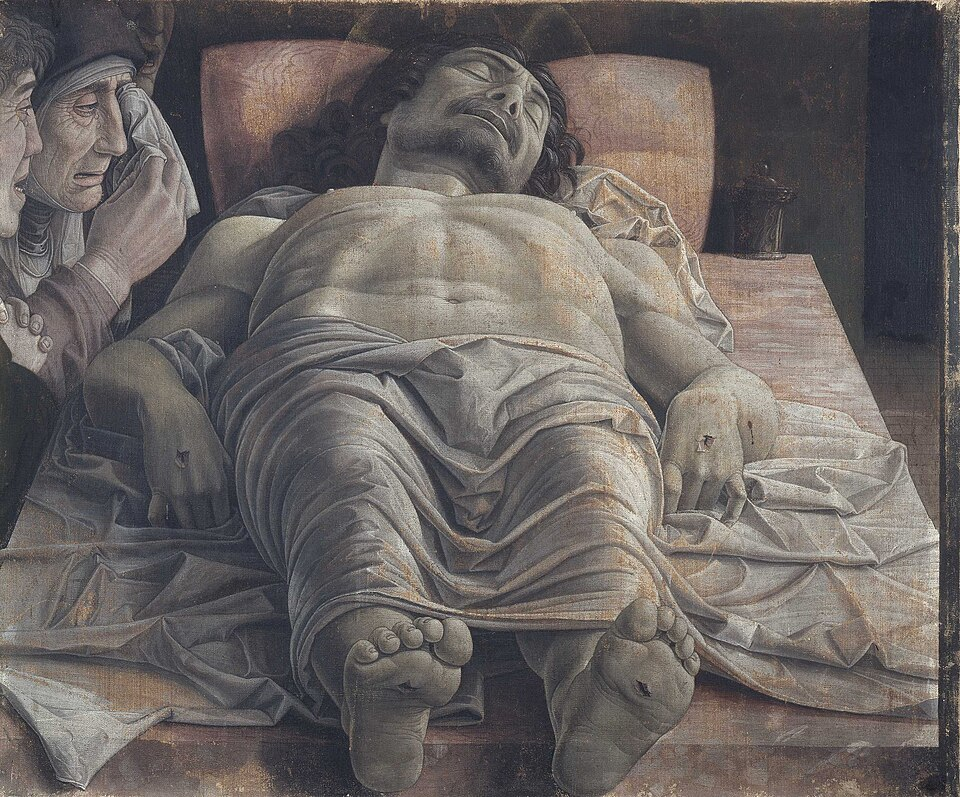

Saint / folklore
Vendetta mourning ritual

Background
A funeral rite of the Southern Italian interior in which the dead man’s mother mouths his wounds as a pledge of revenge.
The blood feud survived longest in the isolated interiors of the Mediterranean: Corsica, Sardinia, Calabria, Albania. These were places where state justice was distant or distrusted, and a family’s honour depended on answering a killing with a killing. Women had a central role. They kept the dead man’s memory and the obligation alive, and they made sure the men did not forget.
Funeral rites were where this happened most openly. In Corsica, women improvised voceri, laments that often called for vengeance. In Sardinia and elsewhere, the dead man’s blood-stained shirt might be kept, or even displayed, until he was avenged. The mother’s gesture Lewis describes belongs to this world. By binding herself to the blood, she binds the family to the debt.
In Naples ’44
When a man is killed in a vendetta his mother, if living, kisses and sucks at his wounds at the funeral — the kind of ‘Bronze-Age’ custom Lattarullo, ten miles away in Naples, knows nothing of.
Appears in 1 diary entry.
-
February 12 1944Lewis reflects on the cultural gulf between cosmopolitan Naples and the archaic, vendetta-bound countryside just miles away, as seen through Lattarullo's ignorance of it.
when a man is killed in a vendetta, his mother, if living, kisses and sucks at his wounds at the funeral as a display of grief and desire for vengeance
Use ← → to move between pages